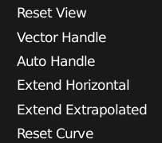
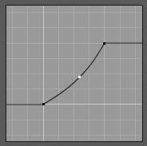
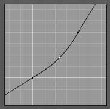

Extended Controls¶
This page documents some of the more involved interface controls.
Color Picker¶
All of the color picker types have the common RGB, HSV and Hex options to show values.
Blender uses (0 to 1.0) values to express colors for RGB and HSV values.
Some colors also define an alpha value A, below the color sliders.
Note
Blender corrects Gamma by default
for more information about how to disable Gamma correction in Blender, see: Color Management and Exposure page.
- Use
Wheelto change overall brightness. - Press
Backspaceto reset to the original color.
Color Picker Types¶
The default color picker type can be selected in the user preferences, see: System.
For operations that are capable of using Alpha, another slider is added at the bottom of the color picker.
|
|
{kind=link}
{kind=link}
{kind=link}
{kind=link}
{kind=link}
Hexadecimal Colors¶
You can optionally use hexadecimal (Hex) values, expressed as (RRGGBB), a common way to represent colors for HTML and useful to quickly copy/paste colors between applications.
Shorthand hex colors are also supported RGB, so dark-yellow FFCC00, can be written as FC0.
Eyedropper¶
The eyedropper allows you to sample from anywhere in the Blender window.
The eyedropper can be used to select different kinds of data.
- Color
- This is the most common usage.
- Objects / Object-Data
- This is used with object buttons such as parent, constraints or modifiers to select an object from the 3D视图.
- 相机 Depth
- Number buttons effecting distance can also use the eye-dropper, this is most useful for camera depth of field.
Ewill activate the eye-dropper while hovering over a button.LMBdragging will mix the colors you drag over which can help when sampling noisy imagery.Spacebarresets and starts mixing the colors again.
Color Ramp Widget¶
Color-Ramp.
Color Ramps enables the user to specify a range of colors based on color-stops. Color-stops are similar to a mark indicating where exactly the chosen color should be. The interval from each of the color-stops added to the ramp is a result of the color interpolation and chosen interpolation method. The available options for Color Ramps are:
- Add (
+Button) - Clicking on this button will add a stop to your custom weight paint map. The stops are added from the last selected stop to the next one, from left to right and they will be placed in the middle of both stops.
- Delete (
-Button) - Deletes the selected color-stop from the list.
- Flip (
<->Button) - Flips the color band, inverting the values of the custom weight paint range.
- Color Mode
Selection of the color space used for interpolation.
- RGB
- Blends color by mixing each color channel and combining.
- HSV/HSL
- Blends colors by first converting to HSV or HSL, mixing, then combining again. This has the advantage of maintaining saturation between different hues, where RGB would de-saturate, this allows for a richer gradient.
- Interpolation Options
Enables the user to choose the types of calculations for the color interpolation for each color stop.
- B-Spline
- Uses a B-Spline Interpolation for the color stops.
- Cardinal
- Uses a Cardinal Interpolation for the color stops.
- Linear
- Uses a Linear Interpolation for the color stops.
- Ease
- Uses a Ease Interpolation for the color stops.
- Constant
- Uses a Constant Interpolation for the color stops.
- Numeric Field
Index of the active color-stop (shown as a dashed line).
Allows you to change the active color when colors may be too close to easily select with the cursor.
- Position
- This slider controls the positioning of the selected color stop in the range.
- Color Bar
- Opens a color picker for the user to specify color and Alpha for the selected color stop. When a color is using Alpha, the Color Bar is then divided in two, with the left side showing the base color and the right side showing the color with the alpha value.
Shortcuts¶
LMB(drag) moves colors.Ctrl-LMB(click) adds a new control point.
Curve Widget¶
Curve Widget.
The Curve Widget is found in several places throughout Blender, such as:
- RGB Curves node
- Vector Curves node
- Paint/Sculpt brush falloff
- Color Management curves
The purpose of the Curve Widget is to allow the user to modify an input (such as an image) in an intuitive manner by smoothly adjusting the values up and down using the curve.
The input values are mapped to the X-axis of the graph, and the Y-axis is mapped to the output values.
Control Points¶
Like all curves in Blender, the curve of the Curve Widget is controlled using control points.
By default, there are two control points: one at (0.0, 0.0) and one at (1.0, 1.0), meaning the input is mapped directly to the output (unchanged).
- To move a control point
- Simply click and drag it around.
- To add a new control point
- Click anywhere on the curve where there is not already a control point.
- To remove a control point
- select it and click the
Xbutton at the top right.
Controls¶
Above the curve graph is a row of controls. These are:
- Zoom In
- Zoom into the center of the graph to show more details and provide more accurate control. To navigate around the curve while zoomed in, click and drag in an empty part of the graph.
- Zoom Out
- Zoom out of the graph to show fewer details and view the graph as a whole. You cannot zoom out further than the clipping borders (see Clipping below).
- Tools
- 
Tools for Curves.
- Reset View
- Resets the view of the curve.
- Vector Handle
- Vector type of curve point’s handle. Breaks the tangent at the curve handle, making it an angle.
- Auto Handle
- Automatic type of curve point’s handle.
- Extend Horizontal
Causes the curve to stay horizontal before the first point and after the last point.
Extend Horizontal.
- Extend Extrapolated
Causes the curve to extrapolate before the first point and after the last point, based on the shape of the curve.
Extend Extrapolate.
- Reset Curve
- Resets the curve in default (removes all points added to the curve).
- Clipping
- Use Clipping
- Forces curve points to stay between specified values.
- Min X/Y and Max X/Y
- Set the minimum and maximum bounds of the curve points.
- Delete
- Remove the selected control point. The first and last points cannot be deleted.
- X, Y
- The coordinates of the selected control point.
{kind=link}
{kind=link}
List View¶
At the bottom of a list view (like the ones found in the object data properties) there are controls for filtering and sorting and resizing.
- Rename
- By pressing
Ctrl-LMBover an item’s name, you can edit the text field. This can also be achieved by double clicking. - Resize
- The list view can be resized to show more or fewer items. Hover the mouse over the handle then click and drag the handle to expand or shrink the list.
- Filter
Click the Show filtering options button to toggle filter option buttons.
Type part of a list item’s name in the filter text box to filter items by part of their name.
- Filter Include
- When the magnifying glass icon has a
+sign then only items that match the text will be displayed. - Filter Exclude
- When the magnifying glass icon has a
-sign then only items that do not match text will be displayed.
- Sort
Sort list items.
- Alphabetical
- This button switches between alphabetical and non-alphabetical ordering.
- Inverse
- Sort objects in ascending or descending order. This also applies to alphabetical sorting, if selected.